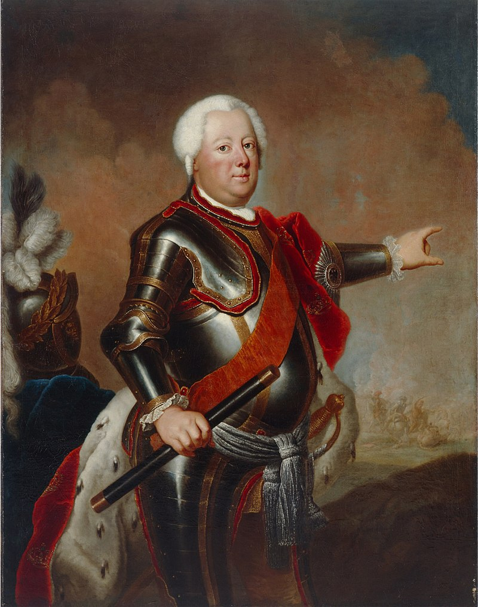
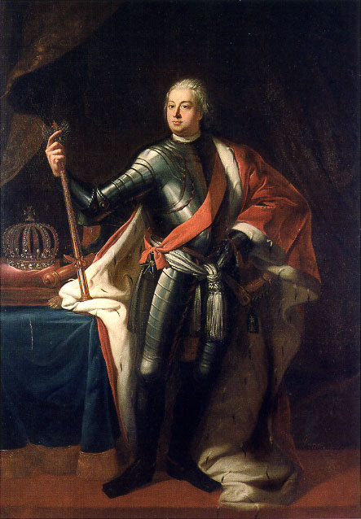
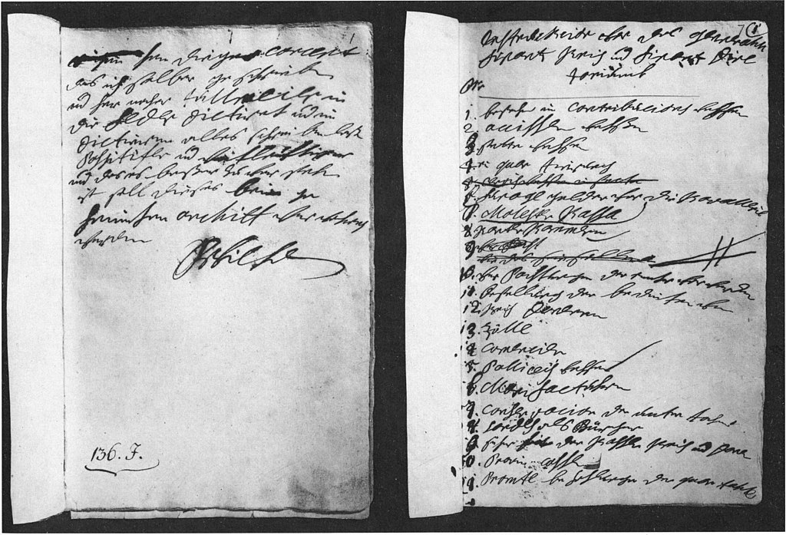
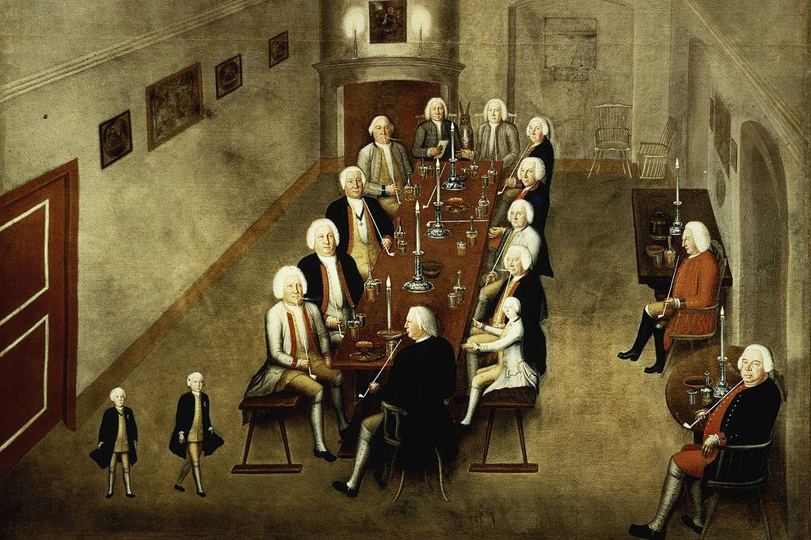

Талант Фридриха Вильгельма к администрированию был результатом того опыта, что он
получил еще в детстве. В 9 лет он получил в управление имение Вустерхаузен к юго-востоку
от Берлина и на удивление грамотно вел его дела. Уже тогда кронпринц убедился в важной
роли торговли, обеспечивавшей рост всей экономики Пруссии. В 13 лет он присутствовал на
заседаниях Тайного совета и постепенно обрел контакт с руководителями основных ведомств
страны. Благодаря этому Фридрих Вильгельм еще до вступления на трон имел более чем ясную
картину неудовлетворительного состояния финансов и системы государственного управления
Пруссии. [3]

Антуан Пэн. Портрет Фридриха Вильгельма I. 1733
Фридрих I желал, чтобы его наследник прошел максимально полную подготовку к управлению страной. Вместе с тем кронпринц Фридрих Вильгельм обладал крайне сложным характером, из-за чего, как пишет К. Кларк, буквально доводил своих учителей до исступления.
Повзрослев, он принялся активно критиковать работу министерств, но, вместе с тем, сохранял как прусский офицер почтительное отношение к отцу. В последние годы жизни Фридрих
постепенно наделял своего сына все большей властью и сделал того своим соправителем. [4]
Экономическая и административная политика
Едва придя к власти в 1712 году, новый король Пруссии сразу же отказался от церемонии
коронации. Фридрих Вильгельм ненавидел роскошь и пышность церемоний при дворе своего
отца – став же королем, он практически моментально урезал содержание двора в несколько
раз, собственноручно вычеркивая избыточные статьи расходов. Накопленные Фридрихом I
драгоценности, роскошные столовые сервизы, запасы вин, мебель и кареты продавались по
самой высокой цене, дабы пополнить королевскую казну. Львы из королевского зверинца были
подарены королю Польши и курфюрсту Саксонии Августу.
Как пишет К. Кларк, новый король уволил 2/3 прислуги, включая шоколатье, виолончелистов, композиторов и органных мастеров; зарплата оставшихся работников была сокращена
на 75 процентов. Многие скульпторы, которые работали на прошлого короля, были шокированы новыми условиями работы и поспешили покинуть Пруссию. Из-за всего этого среди придворных началась настоящая паника. [5]

Самуэль Теодор Герике. Портрет Фридриха Вильгельма I. 1713
Вслед за этим последовала масштабная административная реформа, проведенная в духе
Фридриха Великого Курфюрста. В 1716 году Фридрих Вильгельм приступил к ликвидации
органов местного самоуправления, сосредоточив всю власть в провинциях в руках королевских
чиновников. Были учреждены палаты, управляемые штадт-президентами и директорами, принимавшими коллегиальные решения; местные ландраты подчинялись палатам. Палаты занимались как военным управлением, так и решением финансовых вопросов.

Собственноручная инструкция Фридриха Вильгельма I для Генеральной директории от 1722 года. Государственный архив Мерзебурга
Созданная королем на основе Генерального финансового совета [6] Генерал-директория
отвечала за проведение в жизнь основополагающего принципа его политики «Контроль и экономия». По сути Фридрих Вильгельм создал первый в истории Пруссии полноценный кабинет
министров – 4 министра отвечали за состояние финансов, почтовое и монетное дело, пограничную службу и вопросы северогерманской политики Берлина. На всех заседаниях обязательно присутствовал стул короля, что должно было напоминать министрам о его незримом
присутствии и руководстве. Уже при сыне короля-солдата, Фридрихе II, был учрежден Кабинет-министериум – аналог министерства иностранных дел. [7]
Король-солдат требовал от своих чиновников железной дисциплины и полной самоотдачи ради государства, «железным кулаком» подавлял коррупцию и часто лично проверял
работу всех ведомств. Протекционистская политика короля, направленная на защиту прусских
производителей, позволила сохранить в стране достаточный объем сукна и шерсти, которые
шли на пошив униформы для разраставшейся армии. Результатом всех этих усилий стала ежегодная прибыль почти в 7 млн талеров.
Военные реформы
Король-солдат вкладывал львиную долю казенных средств в развитие армии. Фридрих
Вильгельм увеличил ее практически вдвое не столько путем привлечения наемников, сколько
благодаря созданию системы кантонов [8] – предшественницы сегодняшних российских военкоматов. Теперь каждый полковой командир получал в свое подчинение округ, жители которого
состояли на его учете и проходили 2-хлетнюю военную службу, после чего записывались в
запас и привлекались каждый год к военным сборам.
Солдаты Королевского полка прусской армии в 1735 году. Рисунок Рихарда Кнетеля
При Фридрихе Вильгельме служба дворян в армии стала обязательной. Дворяне теперь
подвергались жесткой муштре и дисциплине, при этом офицерский корпус состоял только из
них. Король-солдат стремился, таким образом, превратить прусское офицерство в элиту не
только армии, но и государства – ту же политику затем продолжит и его сын Фридрих Великий. В войсках проходили регулярные учения и постоянно велась маршевая подготовка – собственно именно оттуда берет свое происхождение знаменитый прусский «гусиный шаг». Как
таковых казарм в Пруссии не было, поскольку каждый прусский подданный обязан был предоставлять солдатам на время войны или учений свободные комнаты в своем доме. [10]
Особую страсть Фридрих Вильгельм питал к солдатам высокого роста, гренадерам, считая их наиболее выносливыми и боеспособными [9]. Был даже случай, когда прусский король и
русский царь Петр I, находившиеся в очень дружеских отношениях, обменялись подарками –
Петр подарил Фридриху Вильгельму полк рослых солдат, а тот, в свою очередь, подарил Петру
Янтарную комнату, которая позднее станет одной из главных достопримечательностей Царского села. В годы Великой Отечественной войны комната, как известно, была безвозвратно
утрачена. Что же касается 6-го пехотного полка, получившего прозвище «Потсдамские великаны», то он был расформирован в 1806 году после того, как сдался войскам Наполеона у
Эрфурта.
Солдаты Королевского полка прусской армии в 1735 году. Рисунок Рихарда Кнетеля
Вместе с тем военная служба не пользовалась популярностью ни среди дворян, ни среди
крестьян. Нередкими были случаи, когда молодых дворян арестовывали и направляли в Берлин
за уклонение от призыва. В свою очередь землевладельцы, рисковавшие потерять свою рабочую силу, помогали своим крестьянам жениться на женщинах, которые рожали тем незаконнорожденных детей. Таким образом они получали статус кормильцев семьи, который, согласно
закону, освобождал их от военной службы. Весьма частыми становились жалобы на произвол офицеров-вербовщиков, которым крестьяне, стремившиеся уклониться от призыва, были
вынуждены давать большие взятки [10].
Прусские добродетели. Отношения с семьей
Личность Фридриха Вильгельма I была крайне противоречивой. С одной стороны, он
стал автором перечня «прусских добродетелей», где он привел те качества, коими, по его мнению, должны были обладать настоящие пруссаки. Сюда входили, в частности, религиозность,
скромность, готовность к самопожертвованию, умеренность в расходах, немногословность,
дисциплина, искренность, честность и другие добродетели. Сформулированный королем-солдатом принцип сдержанности – «Будь больше, чем ты кажешься» – станет затем основополагающим для офицеров Генерального штаба Пруссии, сыгравшего в германской истории одну
из центральных и определяющих ролей.
Семья Фридриха Вильгельма I
С другой стороны, по своему характеру Фридрих Вильгельм напоминал своего большого
друга – русского царя Петра I. Они оба воспринимали свои народы как непутевых детей, за
которыми постоянно нужен глаз да глаз. Их реформы носили соответствующий характер и
нередко проводились, в буквальном смысле, силовыми методами. Как и Петр, введший у себя
дворянские ассамблеи, Фридрих Вильгельм учредил «Табак-коллегию», на которой в дружеской обстановке собирались высшие чиновники, дипломаты, офицеры и литераторы. Стиль
общения был, мягко говоря, совершенно неформальным – выпивая пиво и закуривая табак,
собравшиеся обсуждали самые разные темы начиная от Библии и кончая женщинами и сплетнями. Периодически на таких «пьяных посиделках» случались ожесточенные споры, даже
доходившие до драк, что доставляло Фридриху Вильгельму особое веселье [11].

Табак-коллегия Фридриха Вильгельма I и его министров
Подобно все тому же Петру, прусский король имел крайне напряженные отношения со
своим сыном – кронпринцем Фридрихом. В свое время последний едва не сбежал в Британию
вместе с другом лейтенантом Катте – настолько невыносимой была атмосфера в семье короля.
Фридрих Вильгельм держал своих домочадцев «в ежовых рукавицах», навязывая тем религиозность и нередко избивая за те или иные, как он сам считал, проступки. Вольнолюбивому
Фридриху, который обожал играть на флейте, читать философов и изъясняться по-французски, нередко доставалось от сварливого батюшки. Вполне возможно, что именно из-за этого
будущий король вырос довольно закрытым и холодным человеком, а также обрел довольно
скептическое отношение к религии и браку.
Но если царь Петр казнил своего сына Алексея по спорному обвинению в государственной измене, то Фридрих Вильгельм в итоге по достоинству оценил задатки своего наследника.
Обретя покой и уверенность в светлом будущем Пруссии, король-солдат скончался 31 мая 1740
года в Берлине в окружении своей семьи.